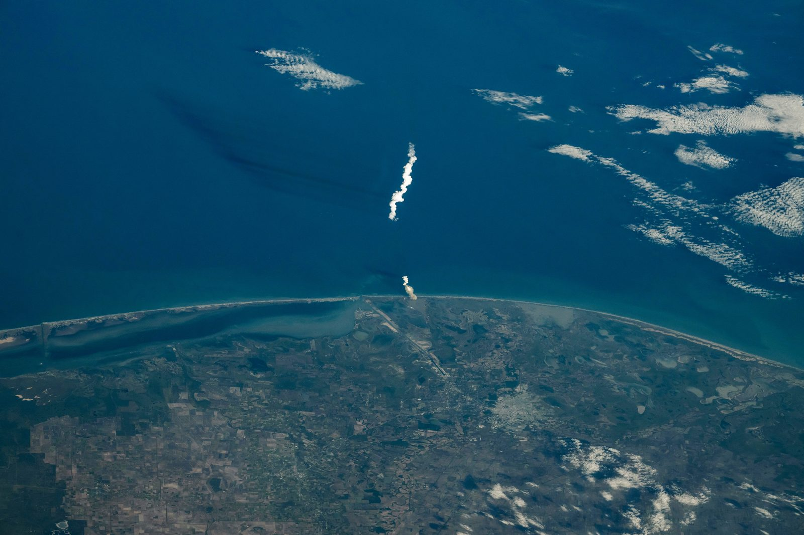
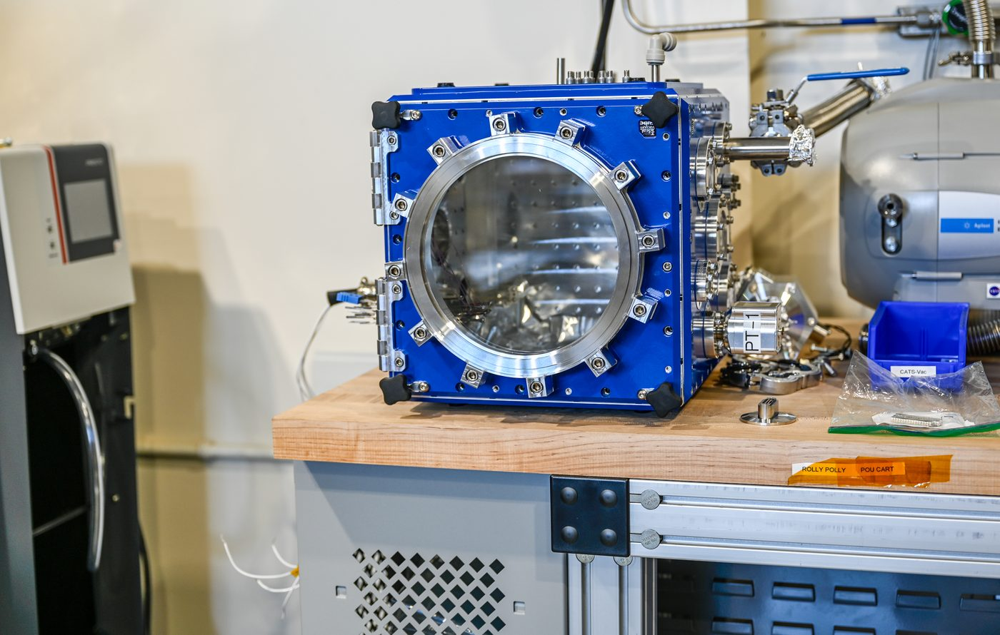
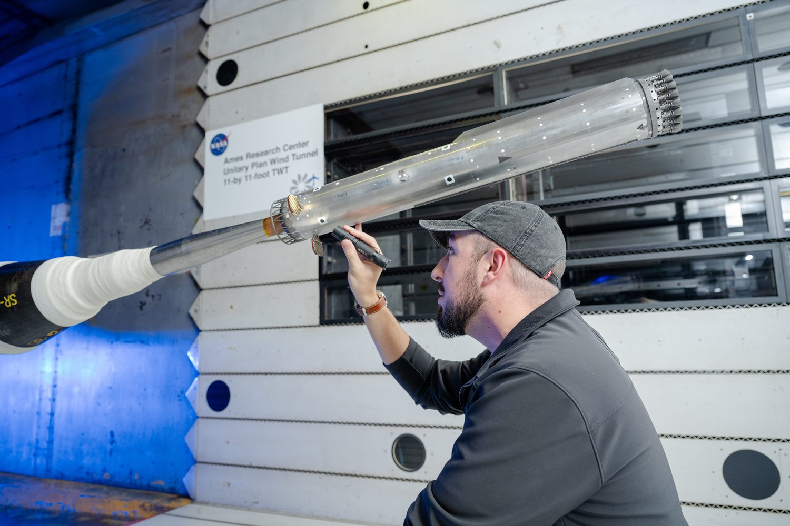

科学探索 · 初中生版 · 中英对照
星舰Starship — 一支不锈钢火箭，为什么必须这么大
把 5,000 吨的东西加速到每秒 7.7 公里，再让它完好地回来——这两件事，才是星舰真正要解决的难题。
数字口径与来源见页脚「附录 B」；其中「100 吨运力」来自 SpaceX 向美国证监会提交的上市申报文件，「33 台发动机」的出处见第 05 节。

火箭为什么必须「扔东西」？
你坐在滑板上，怀里抱着一摞球。你把球一个个往前扔出去——滑板会往后滑。火箭用的就是这个道理：它把燃料燃烧后的气体高速往后喷，换来向前的推力。
妙的地方在于：火箭不推别的，它推的是自己身上的东西。每喷出去一份质量，剩下的部分就更轻、更容易被推动。所以火箭的速度不是「踩油门踩出来」的，是越扔越轻攒出来的。
于是就有了一个反直觉的结论：火箭起飞时绝大部分重量都是燃料，而这些燃料里的大部分，是用来「举起燃料自己」的。
三个词先认识一下
- 推力 — 发动机往后喷气产生的反作用力，单位常用「吨力」。
- 比冲 — 同样一公斤推进剂能换来多少「冲量」，可以理解成燃料的效率分。
- 级间分离 — 用完的空壳直接扔掉，不让它继续占着重量。
动手拨一下：燃料占多少，才够入轨？
这个滑杆是一个简化模型：假设单级火箭、喷气速度固定 3.2 公里/秒（依据猛禽系列海平面效率的公开数值换算，属社群整理口径），用它算速度增量。真实火箭还要扣掉重力和空气带来的损失。
再深一档：那个对数
上一节滑杆里那条曲线，来自一个一百多年前的公式。它长这样——不用怕，我们一个符号一个符号拆：
| 符号 | 读作 | 在这句话里是什么 |
|---|---|---|
| Δv | 速度增量 | 火箭一共能给自己「加」多少速度。想去近地轨道，它至少要 ≥ 7.7 公里/秒。 |
| Isp | 比冲 | 发动机效率分。数值越高，同样的燃料换来的速度越多。 |
| g0 | 标准重力 | 9.8 米/秒²，只是用来把「比冲」的单位换算成速度，不是火箭受的重力。 |
| ln(m0/mf) | 质量比的自然对数 | 起飞质量 ÷ 烧完后的质量，再取对数。这一项是全场最关键的一项。 |
为什么是对数而不是乘法？因为燃料是一份一份被扔掉的：每扔掉一份，火箭就更轻一点，剩下的燃料效率就更高一点。这种「自己帮自己」的过程，累积起来就是指数关系——反过来看，就是对数。
想快一点，最有效的办法不是换更强的发动机，而是让壳更轻：因为速度随「质量比」取对数，而质量比的每一次提升都要求你把结构做得更薄、更轻。
再深一档：为什么「越大越划算」——面积与体积的赛跑
把一个形状按比例放大一倍：它的表面积变成 4 倍（2×2），体积变成 8 倍（2×2×2）。
火箭的推进剂装在体积里，而箭体结构、贮箱壁、隔热层大致随表面积增长。于是放大之后：能装的燃料涨了 8 倍，要背的结构只涨了 4 倍——结构占的比例直接减半。
这是星舰做成这么大的第一个物理理由，也是「火箭越大越厉害」这句话唯一成立的地方。
但这条规律有边界（重要）：它只在「形状相似、材料相同、壁厚等比」时成立。真实结构还要扛住自身重量、气动载荷和振动，越大的箭体壁厚必须额外加厚，加工与运输也更难；而且一发失败，损失也按体积增长。所以放大不是无限的，工程师是在这条曲线和代价之间找位置。
本节结论属于推理与量级估算，页面已把它与「官方公布数字」区分标注（见附录 B）。
最难的不是上天，是回来
很多人以为火箭的难点是把东西送「高」。其实不是。国际空间站的轨道高度大约 400 公里——比广州到长沙的直线距离还近。开车都能到的距离，为什么还要造这么大的火箭？
因为它要的不是高度，是横向速度。想要不被地球拉下来，航天器必须绕着地球「横着飞」得足够快：在几百公里的高度，这个速度大约是每秒 7.7 公里——大约是一颗步枪子弹初速的 9 倍，音速的 23 倍。
而回来的时候，这份动能一分不少都要还回去——它必须变成热。
回来要过四关
- 减速 — 靠空气，不靠燃料。大气层是最省钱的刹车片。
- 姿态 — 用箭体上的翼面控制「哪儿迎风」，不然会翻滚。
- 热防护 — 迎风面贴满隔热瓦，靠它们被烧掉/辐射散热来保护箭体。
- 着陆 — 最后一刻发动机点火或者被发射塔夹住。

为什么第 03 节没有再入实拍图？本页只采用能查到出处的一手图片，NASA 影像库里没有星舰再入等离子体的实拍照片（真正的高清再入画面多为公司自有版权）。找不到就不放——用一张不相干的图填空，比空白骗人。
这个数量级解释了为什么「回来」比「上去」更让工程师头疼：上去是可控地加能量，回来是想方设法把能量倒掉，而且还不能把箭体一起倒掉。
星舰用的办法是：箭体贴满六边形隔热瓦，迎风面朝向大气，用两个翼面调整姿态，让箭体像「跳石头」一样斜着掠过大气、一点点把速度磨掉。这套动作在 2026 年 7 月的第 13 次试飞上做过一次检查：那一次飞船带了 20 颗新一代星链卫星，其中 6 颗加装了相机，专门回头拍自己的热盾；箭体上还有几块瓦被故意涂成白色，用来模拟「瓦掉了」的样子，检验相机能不能看出来。
为什么非要用「被烧」的材料？因为用燃料反推把 7.7 公里/秒减到零，需要的推进剂多到火箭根本带不动——回到第 01 节那条曲线，答案就在里面。
为什么用不锈钢？
星舰的箭体是不锈钢做的，焊接成一圈一圈的环段。第一次听到的人多半会皱眉：不锈钢？那不是厨房水槽的材料吗？
但把条件摊开，问题就变了：火箭的贮箱里装的是 -183℃ 的液氧和液态甲烷，而它的迎风面又要面对再入时的高温。一种材料要同时伺候这两种极端，还要便宜、好焊、能快速修——名单一下子就短了。
| 比较项 | 碳纤维复合材料 | 铝锂合金 | 不锈钢 |
|---|---|---|---|
| 极低温（液氧）下 | 低温下偏脆，性能不稳 | 可用 | 低温下强度反而上升 |
| 再入高温 | 需额外隔热，树脂会分解 | 熔点偏低，撑不住 | 熔点高，能扛更高温度 |
| 成本 | 最贵 | 中等 | 最便宜，供应链成熟 |
| 加工与修补 | 需要大烘炉，现场难修 | 一般 | 现场焊接，坏了好补 |
| 重量 | 最轻（代价是上面那些） | 轻 | 明显更重：用重量换简单 |
所以这不是「选了落后的材料」，而是把「性能、成本、制造速度、可维修性」放在一张桌子上算账。星舰的目标是快速重复使用，而不锈钢恰好擅长这件事：便宜、好焊、坏了能当场补。重量的代价，用第 02 节那条「越大越划算」的规律补回来一部分。

猛禽：把同一份燃料多榨一点
星舰的超重助推器上装了 33 台猛禽发动机；上面的飞船装了 6 台（3 台适应海平面、3 台适应真空）。这些发动机烧的是液态甲烷和液氧，用了一种叫做全流量分级燃烧的循环方式。
白话版：把燃料和氧气分别先送进两个小燃烧室烧一遍（一个富燃、一个富氧），烧出来的高温气体不去推火箭，而是各自去转动一个涡轮泵；两股气体最后再进入主燃烧室彻底燃烧。这样做的好处是主燃烧室能承受更高的压力，同样的发动机可以做得更小、更猛。
为什么选甲烷
- 燃烧更干净，发动机内部不容易积碳，重复使用少拆洗。
- 和液氧的温差不算极端，贮箱设计更简单。
- 比冲（燃料效率分）表现好。
以上属于工程通识性说明；具体数值口径见附录 B。
三代猛禽，推力涨了三分之一
| 型号 | 单台推力（海平面） | 用在哪儿 |
|---|---|---|
| 猛禽 1（Raptor 1） | 185 吨力 | 早期原型机 |
| 猛禽 2（Raptor 2） | 230 吨力 | Block 1 / Block 2 飞行 |
| 猛禽 3（Raptor 3） | 250 吨力 | Block 3（现行版本） |
自己算一遍：33 台推得动吗？
助推器 33 台猛禽 3 全开：33 × 250 = 8,250 吨力
火箭起飞质量约 5,000 吨
推重比 ≈ 8,250 ÷ 5,000 ≈ 1.65
推重比必须大于 1，火箭才离得开地面。1.65 意味着「推力是重量的 1.65 倍」——不是特别宽裕，所以每一克多余的结构重量都要省。这个数是本页用公开推力值自行换算的，不是官方公布值。
一次飞行的八分钟
上表时间为量级示意，实际每次飞行略有差异；任务细节以官方发布为准。
它到底成不成功？
截至 2026 年 9 月 28 日，星舰的两级堆叠构型一共飞了 14 次（这一层口径叫「入轨级试飞」）。把这 14 次的结局画出来是这样：
为什么失败了那么多次，还叫「进展」？
因为这是一种把「失败」当数据用的开发方式：先造一个能飞的东西，让它去撞真实的墙，然后根据碎片改图纸。2025 年的三次连续失败（第 7、8、9 次）之后，团队改的是飞船的姿态控制与发动机布局，第 10 次就飞成了。
但这不等于「失败无所谓」——每一次失败都烧掉一枚箭和一整年的产能。它成立的前提是：要能快速再造一枚，而且每一次失败都带来可用的信息。
这套数字是怎么核对的？（两个独立来源）
① 逐次试飞的日期与状态，来自公开发射数据库 Launch Library 2 的 27 条星舰记录（含早期的亚轨道跳飞与计划中的任务）。
② 公司自己在季度财报里披露的发射次数：截至 2026 年 6 月 30 日的半年内，星舰发射 1 次；去年同期半年是 3 次。
两边对得上：第 11 次试飞在 2025 年 10 月，第 12 次在 2026 年 5 月——中间那段空档，正好是半年报里的「1 次」。两个独立来源互相印证，才敢把数字写进页面。
再看一层：把 2019—2021 年的早期跳飞也算上
在两级堆叠飞行之前，SpaceX 用单级的原型机做过 9 次亚轨道试验（「跳飞」）：2019 年星虫的 20 米和 150 米跳飞、2020—2021 年 SN5/SN6 的 150 米跳飞，以及 SN8 到 SN15 的 10～12.5 公里级飞行。
这些试验里，SN8、SN9、SN11 都在着陆阶段炸了，SN10 落地后不久也炸了，只有 SN15 稳稳落住。今天星舰能自己落回地面，用的就是那几次摔出来的数据。
口径提醒：把这 9 次和上面的 14 次加在一起是 23 次飞行器试验，但它与「入轨级试飞 14 次」不是同一件事。看到「星舰飞了多少次」这种说法，先问是哪一层。
找错游戏
第一轮：下面四句话里，只有一句是对的。把它找出来。
规则：点一句判断它「对不对」；这四句里恰有一句正确。
第二轮：反过来——下面四句话里，只有一句是错的。
难度升级：这一轮大多数话都对，你要找出那颗唯一的坏果子。
现在轮到你讲
合上页面，用你自己的话讲给同学听，时限 60 秒。讲不顺的地方，就是你还没真的懂的地方——回去看那一节。
提示（真的卡住了再看）：① 星舰为什么必须这么大？② 上天和回来，哪个更难、难在哪？③ 为什么用不锈钢？④ 一共飞了几次、成功到什么程度？
内容只存在你浏览器的本地存储里；换设备、清缓存就会消失。
中英术语对照
| 中文 | English | 一句话解释 |
|---|
数据来源与口径
三个口径声明
1）什么叫「飞了一次」？本页的「14 次」指的是两级堆叠的入轨级试飞（2023-04-20 起）。2019—2021 年的 9 次单级亚轨道跳飞另算，合并计 23 次。两种说法都对，但说的是不同的东西。
2）型号版本要跟着走。星舰分 Block 1 / Block 2 / Block 3 等版本，总高分别是 121.3 米、123.1 米、124.4 米。本页首屏用的是现行 Block 3 的高度，与早期新闻里的 121 米不是一个版本。
3）官方公布 vs 自行换算。凡是本页用公式算出来的数（总推力、推重比、轨道速度、动能），都明确标了「自算」；属于媒体或社群整理、公司未发布规格表的数字，标了「社群整理」。没有来源的数字，本页不留。
证据分级标记
- 一手 政府文件或公司申报文件（美国证监会申报文件 / NASA / FAA）
- 二手带出处 百科条目或专业媒体，且每条带引用来源
- 未核 本页不使用
SpaceX 官网正文在本页制作时无法从境内网络访问（站点有反自动化拦截），因此本页没有任何「据官网介绍」式的引用——宁可不写，也不假装查过。
图片也讲出处
- 本页 3 张配图全部来自 NASA 影像库（公有领域，允许自由使用，需署名 NASA，且不得暗示 NASA 为本页背书）。
- 每张图的影像编号、拍摄机构、日期都写进了图注，可以直接拿编号到 NASA 影像库核对原图。
- 图中每一张都经过逐张识图核对——确认它到底画的是什么，才写图注。没有一张“看起来像”就配上去的图。